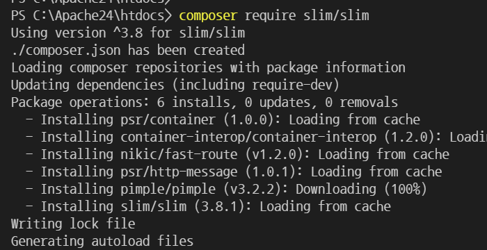
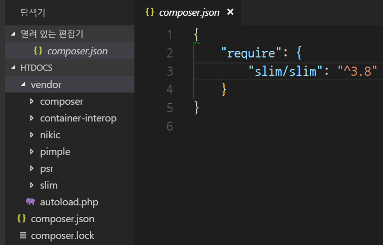
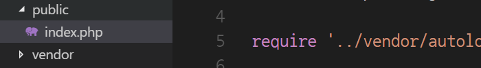
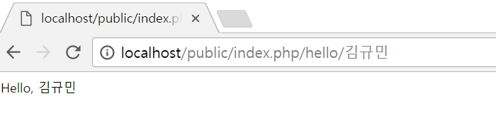

설치
https://www.slimframework.com/
slim프레임워크를 사용하기 위해서 teminal창에 아래의 명령어를 실행한다. 명령을 실행하면 가장 최신 버전의 slim프레임워크가 설치된다.
# composer require slim/slim

설치가 완료되면 아래와 같이 파일들이 생성된다.

가장 기본이 되는 어플리케이션 실행을 위해 public/index.php파일을 생성하고 아래의 코드를 입력한다.

<?php
use \Psr\Http\Message\ServerRequestInterface as Request;
use \Psr\Http\Message\ResponseInterface as Response;
require '../vendor/autoload.php';
$app = new \Slim\App;
$app->get('/hello/{name}', function (Request $request, Response $response) {
$name = $request->getAttribute('name');
$response->getBody()->write("Hello, $name");
return $response;
});
$app->run();
